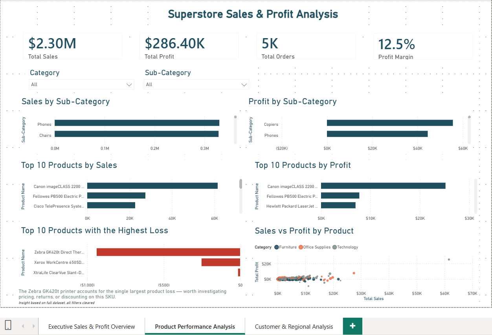

Executive Overview
KPI cards, sales and profit trends, category analysis, and customer segment performance.
An interactive Power BI dashboard designed to help business users monitor sales, profitability, product performance, and regional trends.

The objective of this project was to transform Superstore sales data into an interactive business intelligence dashboard. The dashboard provides executives and business users with a clear view of sales, profitability, customer performance, product performance, and regional trends.
KPI cards, sales and profit trends, category analysis, and customer segment performance.
Top products by sales and profit, loss-making products, and sales versus profit analysis.
Regional sales and profit, top customers, and geographic performance.


Watch a short walkthrough demonstrating the dashboard navigation, interactive filters, KPIs, and analysis across all three pages.
Delivered a three-page interactive Power BI dashboard that transforms raw sales data into actionable business insights. The dashboard enables users to quickly identify growth opportunities, evaluate profitability, analyze product performance, and compare regional results.
I'm happy to walk through how the model and measures work.